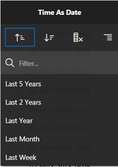

Oracle
Application Express 18.1: Creating a Web Source Module (2 of 2)
Before You Begin
This 10-minute tutorial shows you how to consume the RESTful
Web Source by creating an interactive report that uses a remote
database reference. Here you use the Web Source Module USGS_Earthquake_WS that
you created in your previous tutorial Oracle Application Express 18.1: Creating a
Web Source Module (1 of 2), to produce a report that
displays the place, magnitude, and time of the
earthquakes.
This is the last tutorial in the Oracle
Application Express 18.1: Creating a Web Source Module
Series. Read the tutorials in
sequence:
Oracle Application Express 18.1: Creating a Web Source
Module (2 of 2)
Background
Web
Source Modules enable developers to access Representational
State Transfer (REST) services or generic JSON data feeds in
applications and use the data in Application Express
components such as reports, interactive reports, etc. After
creating the Web Source Modules, you can build a report by
running a wizard and selecting the Web Source.
In Oracle Application Express, a report is the formatted result
of a SQL query. You can generate the SQL query by selecting a
table or view in a wizard, or by defining the SQL query
manually.
What Do You Need?
Access to an Oracle Database
Access to Oracle Application Express 18.1
Add an
Interactive Report
An interactive report is the formatted result of a SQL query
that is only supported on Desktop pages. End users can customize
the report layout and data displayed by selecting options on the
Actions menu.
This section describes how to create a report by running the Create
Page wizard from the Application home page. You can
also run this wizard in Page Designer by clicking the Create
menu and selecting Page.
To add an interactive report:
Select the application, USGS Earthquake.
On the application home page, select the Calendar Page Latest_Earthquakes.
Page Designer opens.
In the Rendering tab under Content Body, select the region,
Latest_Earthquakes.
Click the Time As Date heading. The
following dialog appears. 
Description of the
illustration filter.png
Note that you can view the report in any order you want to.
Save the report:
Select the Actions menu.
Select Report and then Save
Report.
Make the report the default report for the page:
In the Save Report dialog, select As
Default Report Settings.
 Oracle
Application Express 18.1: Creating a Web Source Module (2 of 2)
Oracle
Application Express 18.1: Creating a Web Source Module (2 of 2) Before You Begin
Before You Begin Add an
Interactive Report
Add an
Interactive Report Edit
and Save Report
Edit
and Save Report Next
Tutorial
Next
Tutorial